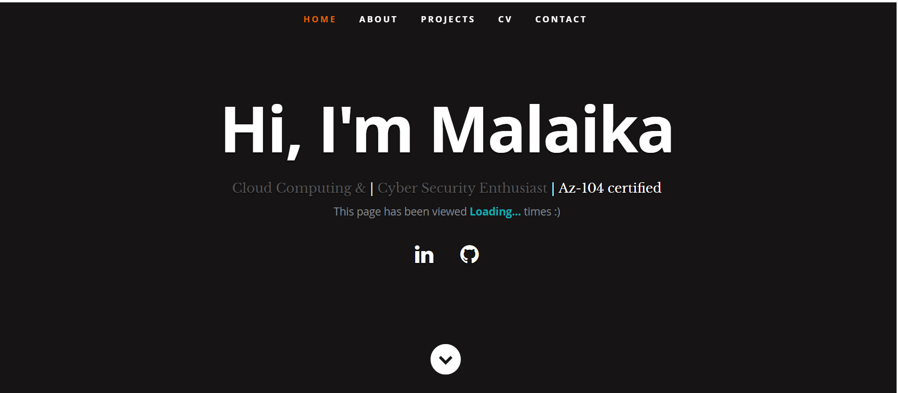

Azure Project with Visitor Tracker
Azure Visitor Tracker is a cloud-native web app that
counts and displays unique visitors using Azure Functions, Cosmos DB,
JavaScript frontend, and GitHub Actions for CI/CD automation.
Key Highlights:
- 🚀 Serverless design using Azure Functions (HTTP Trigger)
- ⚡ Cosmos DB stores visitor count in JSON format
- 🌐 JavaScript frontend dynamically displays updated visitor count
- 🛠️ GitHub Actions automates CI/CD for website and function app

Conceptual representation of the Azure Visitor Tracker project
Challenges Faced:
- 🛠️ Managing throughput limits in Cosmos DB free tier (400 RU/s)
- 📄 Setting up secure connections between Function App and Cosmos DB
Areas for Improvement:
- ⚙️ Use Managed Identity instead of key-based authentication
- 🔔 Add logging and monitoring with Application Insights
- 📊 Enable geo-redundancy for higher availability
Skills Demonstrated:
- ✅ Azure Functions (serverless backend)
- ✅ Azure Cosmos DB (NoSQL storage)
- ✅ JavaScript frontend integration with APIs
- ✅ GitHub Actions for CI/CD automation